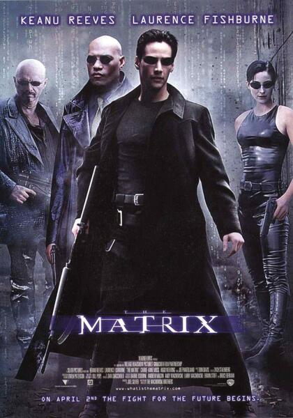

Jhon Wick Pacto de Sangre

Drescripción
JOHN WICK (Keanu Reeves) es un asesino retirado que alguna vez fue el mejor en el negocio. Pero tras una larga enfermedad que provoca la muerte de su amada esposa (Bridget Moynihan), se ve arrastrado de nuevo a un mundo que había abandonado hace tiempo por amor.
Matrix
Drescripción
La Matrix es un ambiente de relación entre cosas y sucesos creado y controlado artificialmente. Una importante característica de la matrix es que en ella incluso las personas son consideradas "cosas".
Trascender
Drescripción
La sinopsis de 'Transcendence' Will Caster (Johnny Depp) es el investigador más importante en el campo de la Inteligencia Artificial, y está trabajando en la creación de una máquina sensitiva que combine la inteligencia colectiva de todo lo conocido con el rango completo de emociones humanas.
El viaje de Chijiro
Drescripción
Sinopsis: Chihiro es una niña de diez años que viaja en coche con sus padres. Después de atravesar un túnel, llegan a un mundo fantástico, en el que no hay lugar para los seres humanos, sólo para los dioses de primera y segunda clase.